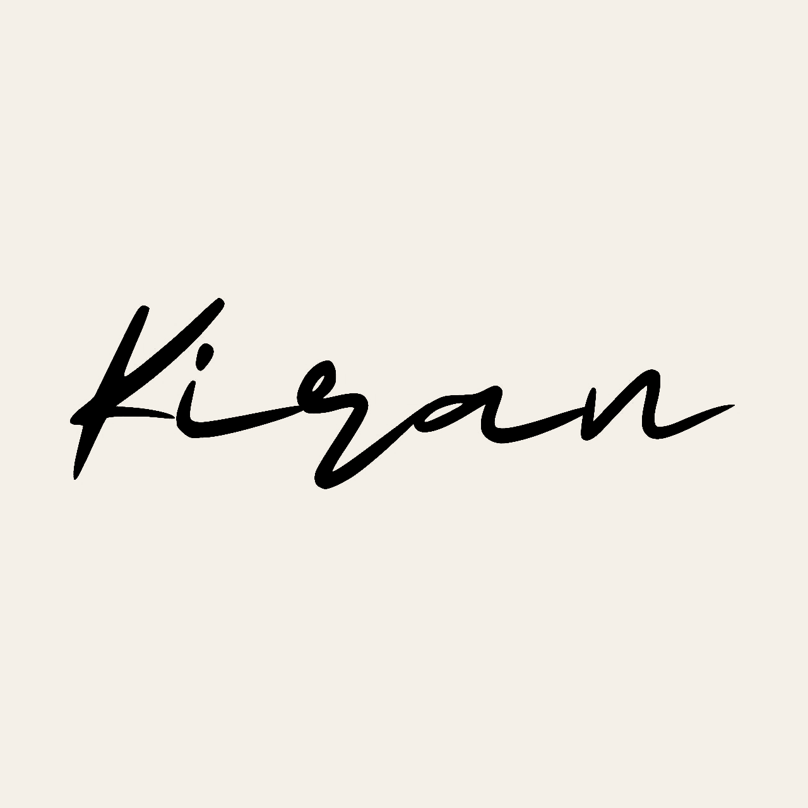

▶02:14
After the Rain
Short film · Color grade & edit

Let's talk ↗Video editor · Based in India
I turn raw footage into sharp, emotional, and unforgettable videos for brands, creators, and people with something to say.
Selected work
A sample reel of edits across commercial, social, and documentary storytelling.
A little about me
I’m Kiran, a video editor who believes the best cut is the one that makes you feel before you notice the technique. From the first rough assembly to the final sound mix, I bring rhythm, clarity, and a human touch to every story.
Have a story in mind?